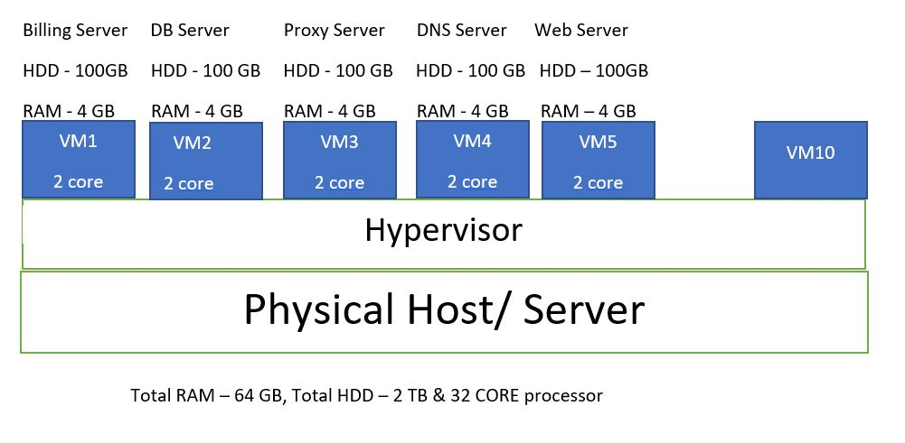

Virtualization is the "creation of a virtual (rather than actual) version of something, such as server, a desktop, a storage device, an operating system or network resources." In other words, Virtualization is a technique, which allows to share a single physical instance of a resource or an application among mulitple customers and organization. It does by assigning a logical name to a physical server and providing a pointer to that physical resource when demanded.What is the need of Virtualization?
Let's go through a data center setup of a software company which cost nearly 1 Million for example per year, which includes the mentioned point below: 1) 2000 sqft area of Datacenter -> capex 2) 100 Physical Server (4GB RAM, 2 or 4 core CPU, 60GB HDD). 30 Server utilized for infrastructure and 70 for application. -> capex 3) Colling System for 100 servers -> capex & opex 4) 100 Physical disk for server -> capex 5) Cabling for 100 servers and power whips -> capex 6) DC staff -> opex 7) Electricity & Power Backup -> opex Let's see the scenario after Virtualization Assuming, we're running one application per server in production. For example, one dedicated for web server, one for DB server etc.  Here, if you are running 10 VM on one physical server, then it means you need only 10 physical server now to host 100 VM servers. It would be easy to maintain the server, cost-effective for the company if they use Virtualization.